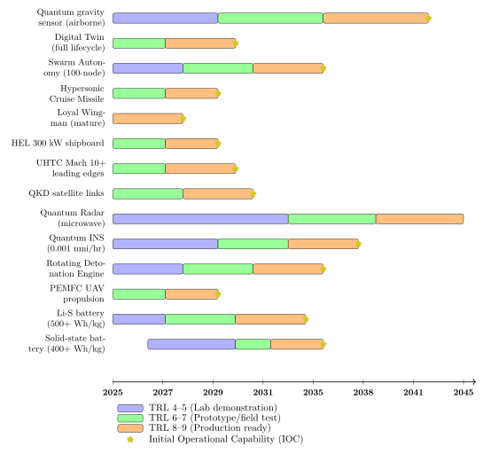

Chapter 35: Future Technologies¶
35.1 Advanced Propulsion Technologies¶
Propulsion is the single greatest constraint on the performance, range, and endurance of unmanned and autonomous weapon systems. Current state-of-the-art propulsion technologies are mature and approaching fundamental thermodynamic and electrochemical limits. The technologies described in this section—some near-term, some speculative—represent the trajectories most likely to reshape the performance envelope of future drone and missile systems in the 2025–2045 horizon.
35.1.1 Advanced Battery Technologies¶
Solid-State Batteries¶
Conventional lithium-ion batteries use a liquid electrolyte, which imposes thermal management requirements, limits voltage windows, and presents flammability risks. Solid-state batteries (SSBs) replace the liquid electrolyte with a solid ionic conductor. The two principal solid electrolyte chemistries for aerospace applications are:
-
LLZO (Li\(_7\)La\(_3\)Zr\(_2\)O\(_{12}\), Garnet-type): ionic conductivity \(\sigma_{\text{Li}} \approx 10^{-3}\) S/cm at 25° C; electrochemically stable against lithium metal; wide voltage window (0–6 V vs. Li/Li\(^+\)).
-
LiPON (Lithium Phosphorus Oxynitride): thin-film electrolyte; \(\sigma_{\text{Li}} \approx 10^{-6}\) S/cm; used in thin-film microbatteries; suitable for MEMS-scale systems.
The energy density of a solid-state cell at the pack level is projected to reach 400–500 Wh/kg by 2027–2030, compared to approximately 250–280 Wh/kg for current Li-ion packs. The fundamental electrochemical constraint on cathode-limited cells is:
where \(n\) is the charge transfer per formula unit, \(F\) is the Faraday constant (96,485 C/mol), \(\Delta V\) is the cell voltage, \(m_{\text{active}}\) is the active cathode mass, \(M_{\text{cathode}}\) is the molar mass, and \(r_{\text{overhead}}\) is the mass ratio of packaging and non-active components. SSBs reduce \(r_{\text{overhead}}\) by eliminating liquid management and thermal management systems.
Military applications: MALE/HALE UAV endurance extension; loitering munition extended loiter time; electric propulsion for micro-UAV swarms. The challenge for military adoption is manufacturing scalability, cycle life at wide temperature extremes (\(-40\)° C to \(+70\)° C operational), and mechanical integrity under vibration and shock loads.
Lithium-Sulphur Batteries¶
Lithium-sulphur (Li-S) chemistry offers a theoretical specific energy of 2600 Wh/kg (vs. 387 Wh/kg theoretical for Li-ion). The practical pack-level projection is 500+ Wh/kg by 2028–2032. The theoretical cell voltage is:
The fundamental challenge is the polysulphide shuttle: lithium polysulphides (Li\(_2\)S\(_x\), \(4 \leq x \leq 8\)) formed during discharge dissolve in the electrolyte, migrate to the lithium anode, and react destructively, causing capacity fade:
Commercial developers include Lyten (San Jose, USA), which uses 3D graphene cathode scaffolding to confine polysulphides; and the now-acquired Oxis Energy (UK), which demonstrated 470 Wh/kg at the cell level before its 2021 insolvency. Military-oriented development is active in the US AFRL and UK DSTL.
Hydrogen Proton Exchange Membrane Fuel Cells¶
Hydrogen PEM fuel cells have a theoretical specific energy exceeding 33,000 Wh/kg for pure hydrogen (lower heating value). At the system level, including compressed or cryogenic hydrogen storage, a complete PEMFC propulsion system can achieve 1,000–2,000 Wh/kg—roughly 4\(\times\) current Li-ion. The reversible cell voltage for the hydrogen-oxygen reaction is:
Actual cell voltage under load:
where \(\eta_{\text{act}}\) is activation overpotential (kinetic losses), \(\eta_{\text{ohm}}\) is ohmic losses (membrane resistance), and \(\eta_{\text{conc}}\) is concentration losses at high current densities. Practical cell voltages of 0.6–0.7 V at rated power give stack efficiencies of 50–60%.
Military logistics challenges include hydrogen storage (700 bar compressed or cryogenic), ground infrastructure, and refuelling under field conditions. Boeing’s Phantom Eye HALE demonstrator used liquid hydrogen; the UK Rapid Capabilities Office has demonstrated PEMFC-powered micro-UAVs under Project Herius.
35.1.2 Rotating Detonation Engine¶
The rotating detonation engine (RDE) operates on a fundamentally different thermodynamic cycle from the constant-pressure Brayton cycle used in gas turbines. In an RDE, a continuous detonation wave rotates azimuthally around an annular combustion chamber, detonating fuel-oxidiser mixture continuously. The Fickett-Jacobs (detonation) cycle has a thermodynamic efficiency:
where \(T_{\text{CJ}}\) is the Chapman-Jouguet detonation temperature, \(T_1\) is the initial temperature, \(\gamma\) is the ratio of specific heats, and \(\Delta h_f^0 / M\) is the fuel’s mass heat of detonation. The detonation cycle achieves a pressure gain of 15–25 atm across the combustion zone versus effectively zero pressure gain in deflagrative combustion, yielding a projected thermodynamic efficiency advantage of 10–15% over equivalent gas turbine cycles.
The US Air Force Research Laboratory (AFRL) and Rotating Detonation Engine Turbine Integration Project (RDET) have demonstrated RDE operation integrated with turbines. Key engineering challenges include: managing back-pressure to prevent detonation wave propagation upstream into fuel manifolds; multi-wave instability; and combustor material survivability under the intense thermal cycling of continuous detonation.
35.1.3 Nuclear Thermal Propulsion¶
Nuclear thermal propulsion (NTP) heats a propellant (typically liquid hydrogen) by passing it through or around a nuclear reactor core, then expands it through a nozzle. No combustion occurs; the energy source is fission. The specific impulse:
where \(T_c\) is the reactor core temperature, \(M_p\) is the propellant molecular mass, \(R_u\) is the universal gas constant, and \(\gamma\) is the specific heat ratio. For hydrogen (\(M_p = 2\) g/mol) at \(T_c = 2700\) K, \(I_{sp} \approx 800\)–1,000 s—approximately twice that of the best chemical propellants. DARPA’s Demonstration Rocket for Agile Cislunar Operations (DRACO) programme (2021–present) is developing an NTP demonstrator. Treaty constraints (the Outer Space Treaty and CTBT interpretation) complicate atmospheric NTP use for offensive missiles; Russia’s SSC-X-9 Skyfall (9M730 Burevestnik) nuclear-powered cruise missile is the most prominent claimed operational NTP weapon.
35.1.4 Laser Propulsion¶
Ablative laser propulsion imparts momentum to a vehicle by focusing a high-power laser beam on a target material, ablating surface mass and generating thrust via the reaction force. The thrust-to-power ratio (specific impulse and momentum coupling coefficient) satisfies:
where \(C_m\) is the momentum coupling coefficient (N/W), \(F\) is thrust, \(P_{\text{laser}}\) is laser power, and \(v_e\) is the effective exhaust velocity. Typical \(C_m \approx 10\)–100 \(\mu\)N/W, far below chemical propulsion efficiency. Ground-based laser propulsion is being investigated for low-cost microsatellite launch (ICAN laser project, Regensburg); military interest focuses on directed-energy launch of reconnaissance payloads from denied areas. Practical constraints include atmospheric turbulence, pointing accuracy, and laser power availability.
35.1.5 Distributed Electric Propulsion for HALE¶
Distributed electric propulsion (DEP) replaces a small number of large engines with many smaller electric motors driving propellers or fans distributed across the airframe. For a HALE UAV with wingspan \(b\) and \(N\) motors:
where \(\Delta C_L\) is the lift increment from propeller slipstream energising the wing boundary layer. NASA’s X-57 Maxwell demonstrated a 5\(\times\) reduction in wing area for the same takeoff performance with DEP. For HALE platforms such as the Airbus Zephyr (solar-electric), DEP enables aeroelastic load management: individual motors can be throttled to reshape the lift distribution and reduce bending moments on the ultra-light flexible wing, extending structural fatigue life.
35.2 Advanced Materials¶
35.2.1 Ultra-High Temperature Ceramics¶
Ultra-high temperature ceramics (UHTCs) are a class of materials with melting points above 3000° C, essential for hypersonic vehicle leading edges and nosecones that experience aerothermal heating rates of \(10^3\)–\(10^5\) W/cm\(^2\). Key UHTCs include:
-
HfB\(_2\) (hafnium diboride): \(T_m = 3380\)° C; thermal conductivity \(k = 104\) W/mK; oxidation resistance enhanced by SiC addition.
-
ZrB\(_2\) (zirconium diboride): \(T_m = 3245\)° C; \(k = 60\) W/mK; less expensive than hafnium; used in ZrB\(_2\)-SiC composites.
-
HfC (hafnium carbide): \(T_m = 3900\)° C (highest of any known binary compound); low thermal conductivity; used as coating on C/C composites.
The critical thermal-mechanical design constraint for a UHTC leading edge of radius \(R\) and length \(L\) subject to stagnation heating \(\dot{q}_s\) is:
where \(T_s\) is the surface temperature, \(T_c\) is the core temperature, \(\epsilon\) is emissivity, and \(\sigma\) is the Stefan-Boltzmann constant. The first term represents conductive heat rejection; the second, radiative cooling. At Mach 10, \(\dot{q}_s\) at a 1 mm leading edge radius can exceed \(5000\) W/cm\(^2\), requiring \(T_s > 2500\)° C and relying on high emissivity (\(\epsilon > 0.8\)) for radiative cooling. Current UHTC leading edges have demonstrated 1800–2500° C survival in arc-jet testing.
35.2.2 Carbon Nanotube Composites¶
Carbon nanotubes (CNTs) are cylindrical allotropes of carbon with sp\(^2\) bonding, diameters of 0.4–2 nm (single-wall, SWCNT) or 2–100 nm (multi-wall, MWCNT), and extraordinary mechanical properties. Young’s modulus \(E = 1\) TPa, tensile strength \(\sigma_{\text{UTS}} = 100+\) GPa (theoretical), and thermal conductivity \(k_{\text{axial}} > 3000\) W/mK along the tube axis.
Incorporation into carbon fibre reinforced polymer (CFRP) matrices can improve:
-
Interlaminar shear strength (ILSS) by 30–50% through improved matrix toughness.
-
Electrical conductivity for lightning strike protection (replacing copper mesh).
-
Electromagnetic interference (EMI) shielding (surface density \(< 200\) g/m\(^2\)).
The key fabrication challenge is achieving aligned, well-dispersed CNT networks within the matrix without agglomeration. CNT forest growth by chemical vapour deposition (CVD), combined with transfer printing onto prepreg layers, achieves partial alignment but at industrial scales remains expensive. The specific strength advantage of CNT composite versus baseline CFRP:
where \(f_{\text{CNT}}\) is the CNT volume fraction, \(\eta_l\) is the length efficiency factor, and \(\eta_o\) is the orientation efficiency factor.
35.2.3 Graphene¶
Graphene is a single-atom-thick layer of sp\(^2\)-bonded carbon arranged in a hexagonal lattice. Its intrinsic properties: \(E \approx 1\) TPa; breaking strength \(\sigma \approx 130\) GPa; thermal conductivity \(\kappa \approx 5000\) W/mK; electrical conductivity \(\sigma_e \approx 10^8\) S/m; optical transmittance \(T = 97.7\%\); impermeability to all gases. Key aerospace and weapons applications:
-
EMI shielding: Few-layer graphene coatings at 1–10 nm thickness achieve EMI shielding efficiency of 20–30 dB; graphene foam achieves 90+ dB at 2 g/cm\(^3\).
-
Thermal interface materials: Graphene sheets between power electronics and heat sinks reduce junction temperature by 20–30° C.
-
Strain sensors: Graphene piezoresistive gauges; gauge factor \(GF > 1000\) vs. \(GF \approx 2\) for metallic strain gauges; structural health monitoring.
-
Transparent antenna substrates: Graphene transparent conducting electrode replacing ITO in conformal antenna arrays.
35.2.4 Shape Memory Alloys and Morphing Structures¶
Nickel-titanium (NiTi, Nitinol) shape memory alloys exhibit the shape memory effect (SME) and superelastic (pseudoelastic) behaviour. The transformation between the high-temperature austenite phase (B2 cubic) and the low-temperature martensite phase (B19’ monoclinic) is thermoelastic and reversible. The recoverable transformation strain:
Morphing wing applications use NiTi wires or torque tubes as solid-state actuators that change shape when heated (electrically or by aerodynamic heat), replacing conventional hinged control surfaces. Benefits: no gaps (stealth), smooth surface (drag reduction), reduced radar cross-section (RCS). The University of Bristol MORPHLET programme demonstrated NiTi-actuated adaptive winglets on a UAV; DARPA’s MAS programme funded morphing wing SMA actuators for tactical missiles.
35.2.5 Electromagnetic Metamaterials¶
Metamaterials are engineered structures with periodically arranged sub-wavelength unit cells that produce effective electromagnetic (EM) permittivity \(\varepsilon_{\text{eff}}\) and permeability \(\mu_{\text{eff}}\) not found in natural materials, including negative values. The dispersion relation for a metamaterial:
When both \(\varepsilon_{\text{eff}} < 0\) and \(\mu_{\text{eff}} < 0\) simultaneously (double-negative medium), \(k\) is real but the phase velocity is anti-parallel to the group velocity—a “left-handed” medium. Applications in drones and missiles:
-
Perfect absorbers: Unit cells tuned to absorb specific radar frequencies; supplement or replace RAM coatings on stealth platforms.
-
Frequency selective surfaces (FSS): Bandpass or bandstop filter for EM waves; protects internal electronics from specific jamming frequencies.
-
Metasurface antennas: 2D metamaterial apertures; beam steering without mechanical gimbal; flat phased array with electronic reconfiguration.
35.2.6 Self-Healing Polymers¶
Self-healing polymer composites can autonomously repair damage—impact cracking, delamination, oxidation damage—without human intervention. Two principal mechanisms:
-
Microencapsulation: Healing agent (e.g., dicyclopentadiene) encapsulated in micro-spheres (5–200 \(\mu\)m diameter) dispersed in the matrix. Crack propagation ruptures capsules; healing agent flows into crack and polymerises when it contacts the embedded catalyst (Grubbs’ catalyst). Achieves 75–90% fracture toughness recovery. Single-use per capsule location.
-
Vascular network: Hollow microchannels (diameter 50–500 \(\mu\)m) embedded in the composite carry healing agent; resupplied from a reservoir. Multiple healing cycles possible.
For an aircraft structure subject to \(N\) fatigue cycles with crack density \(\rho_c\), the self-healing life extension factor \(\xi\) satisfies:
where \(\eta_{\text{repair}} \in [0,1]\) is the healing efficiency. For UAV structures subject to operational damage from birds, debris, or fragments, self-healing composites could significantly extend service life without depot maintenance.
35.3 Advanced Guidance and Autonomy¶
35.3.1 Quantum Inertial Navigation¶
Cold-atom interferometry uses laser-cooled atoms (typically \(^{87}\)Rb or \(^{133}\)Cs at temperatures of 1–100 nK) in an atom interferometer to measure acceleration and rotation with extraordinary precision. The phase shift in an atom interferometer:
where \(\mathbf{k}_{\text{eff}}\) is the effective wavevector of the Raman laser pulses, \(\mathbf{a}\) is the acceleration to be measured, and \(T\) is the interrogation time between laser pulses. Accelerometer sensitivity scales as \(T^2\); for \(T = 1\) s, sensitivities approaching \(10^{-12}\) g are theoretically achievable—six orders of magnitude better than MEMS accelerometers.
Quantum INS would achieve navigation drift rates below 0.001 nautical miles per hour, providing GPS-level accuracy in GPS-denied environments. DARPA’s QUANTUM programme and UK DSTL’s cold-atom inertial sensor programme are developing miniaturised quantum sensors for platform integration. The primary engineering challenge is reducing the size, weight, power, and cost (SWaP-C) of the vacuum systems, laser systems, and magnetic shielding required.
35.3.2 Deep Reinforcement Learning for Guidance¶
Deep reinforcement learning (DRL) formulates guidance as a Markov Decision Process (MDP). The state \(s_t\) includes the relative position and velocity of the interceptor and target; the action \(a_t\) is the commanded lateral acceleration; the reward \(r_t\) penalises miss distance and control effort:
The DRL agent maximises the expected return \(J = \mathbb{E}\left[\sum_{t=0}^{T_f} \gamma^t r_t\right]\) using algorithms such as Proximal Policy Optimisation (PPO) or Soft Actor-Critic (SAC). DRL guidance laws have been demonstrated to outperform classical proportional navigation in non-linear evasive manoeuvre scenarios, generalising across target dynamics not seen during training. Key challenges: formal verification of safety properties; distribution shift in adversarial environments; training compute requirements.
35.3.3 Cognitive Electronic Warfare¶
Cognitive electronic warfare (CEW) systems sense the electromagnetic environment, learn the characteristics of specific emitters, and adaptively optimise jamming waveforms in real time. The CEW signal-processing chain:
where \(\mathbf{w}\) is the jamming waveform vector and \(J(\mathbf{w})\) is the jamming effectiveness metric (e.g., degradation of radar cross-correlation function, disruption of communications link). CEW systems can respond to adaptive radar waveforms and frequency-hopping communications in milliseconds—faster than human EWSO can act. US programmes include DARPA Behavioral Learning for Adaptive Electronic Warfare (BLADE) and the Navy COLDS programme.
35.3.4 Swarm Autonomy¶
Autonomous swarming extends drone-formation flight to emergent, decentralised coordination. Each agent \(i\) maintains local state \(\mathbf{x}_i\) and applies a control law derived from interactions with neighbours \(\mathcal{N}_i\). The canonical consensus-based flocking law (Reynolds, 1987; Olfati-Saber, 2006):
where \(V_{ij}\) is the inter-agent potential function (repulsive at short range, attractive at medium range) and \(\mathbf{u}_{\text{mission},i}\) is the mission-directed component. Advanced swarm behaviours include:
-
Dynamic task reallocation on attrition: When agent \(j\) is lost, its assigned target is auctioned among surviving agents via a distributed contract net protocol.
-
Deceptive manoeuvre: Sub-swarms execute feint attacks to saturate point defences while the primary strike element approaches from a different vector.
-
Emergent coalition formation: Agents with complementary capabilities (ISR, EW, strike) self-organise into mission-optimised coalitions without central assignment.
35.4 Hypersonic Systems — Advanced Developments¶
35.4.1 Boost-Glide Vehicles¶
Hypersonic glide vehicles (HGVs) are released from a ballistic missile booster at altitudes of 40–100 km, then glide at Mach 5–20 in the upper atmosphere (20–60 km), manoeuvring to evade missile defence systems. The glide phase trajectory is governed by:
where \(\mathbf{L}\) and \(\mathbf{D}\) are the aerodynamic lift and drag per unit mass and \(\rho_{\text{veh}}\) is the vehicle density. The lift-to-drag ratio of current HGV designs is \(L/D \approx 2\)–4; range extension compared to a purely ballistic trajectory is a factor of 3–6. Deployed systems include China’s DF-17 (IRBM + HGV), Russia’s Avangard (ICBM-launched), and the US Conventional Prompt Strike (CPS, Navy) and Long-Range Hypersonic Weapon (LRHW, Army).
35.4.2 Air-Breathing Hypersonic Cruise Missiles¶
Hypersonic cruise missiles (HCMs) maintain sustained air-breathing propulsion throughout cruise at Mach 5–8. The US HAWC (Hypersonic Air-breathing Weapon Concept), HASTE (Hypersonic Air-breathing Scramjet Testbed Engine), and the Russian 3M22 Tsirkon (claimed Mach 6–9) are examples.
The scramjet combustion efficiency at Mach 8 cruise altitude (30 km) is constrained by the residence time \(\tau_{\text{res}}\) in the combustor:
where \(L_c\) is combustor length, \(M\) is Mach number, and \(a_\infty\) is the freestream speed of sound. For \(M = 8\), \(a_\infty = 295\) m/s, and \(L_c = 1\) m: \(\tau_{\text{res}} \approx 0.4\) ms. Combustion of hydrocarbon fuel must be initiated and completed in this time—the fundamental challenge of scramjet combustion engineering.
35.4.3 Hypersonic Interception¶
Intercepting HGVs requires extended acquisition range, track continuity through manoeuvre, and an interceptor with divert capability for the glide phase. The SM-3 Block IIA (Aegis BMD) has demonstrated kill vehicle velocities sufficient for high-endoatmospheric intercept. The miss distance for a proportional navigation interceptor against a manoeuvring target:
where \(a_T\) is the target lateral acceleration, \(T_{go}\) is the time to go, and \(N'\) is the effective navigation ratio. For an HGV pulling \(5g\) lateral acceleration at \(T_{go} = 5\) s with \(N' = 4\): \(\sigma_{\text{miss}} \approx 39\) m—beyond the lethal radius of a hit-to-kill interceptor. Larger blast-fragmentation warheads or nuclear warheads are being studied for HGV interception; conventional hit-to-kill may require guidance accuracy of \(<\) 5 m.
35.5 Directed Energy Weapons — Advanced Developments¶
35.5.1 High-Power Laser Weapon Systems¶
The US Navy’s HELIOS (High Energy Laser with Integrated Optical-dazzler and Surveillance) system fields a 150+ kW class fibre laser weapon integrated with the Arleigh Burke DDG platform. The lethality of a HEL against an airborne target is characterised by the fluence \(H\) deposited:
where \(P_{\text{laser}}\) is the laser power, \(t_{\text{dwell}}\) is the dwell time on target, \(\lambda\) is wavelength, \(f\) is range, \(D_{\text{tx}}\) is the transmitter aperture, and \(\eta_{\text{atm}}\) is the atmospheric transmission. Thermal blooming—thermally-induced phase distortion of the beam by the heated air column—degrades \(\eta_{\text{atm}}\) at high power and long range. Adaptive optics (deformable mirror + wavefront sensor) corrects atmospheric distortion:
where \(\hat{\phi}_{\text{aberration}}\) is the estimated wavefront distortion from a Hartmann-Shack wavefront sensor. A 300 kW-class laser on a surface combatant, with a 60 cm aperture and effective adaptive optics, can achieve lethal fluence against low-flying cruise missiles and drone swarms at ranges of 4–8 km in good atmospheric conditions.
35.5.2 Gyrotron Microwave Weapons¶
The Active Denial System (ADS) uses a 95 GHz gyrotron microwave source to deposit energy in the skin to a depth of 0.4 mm, producing an intense burning sensation without permanent harm—a non-lethal area denial weapon. Gyrotrons generate millimetre-wave radiation through the electron-cyclotron maser instability in a magnetic field:
where \(B\) is the magnetic field strength, \(m_e\) is the electron mass, and \(\gamma\) is the relativistic Lorentz factor. Output powers of 100 kW to 1 MW CW at 95 GHz are achievable. High-power (HPM) variants at 2–4 GHz can couple energy into electronic systems, degrading or destroying electronic components at ranges of hundreds of metres—an anti-electronics, not anti-personnel, weapon.
35.5.3 Free Electron Laser¶
The free electron laser (FEL) uses a relativistic electron beam passing through an alternating magnetic field (undulator) to generate stimulated emission at a wavelength:
where \(\lambda_u\) is the undulator period, \(\gamma\) is the beam Lorentz factor, and \(K = e B_0 \lambda_u / (2 \pi m_e c)\) is the undulator parameter. The FEL is uniquely tunable: by adjusting \(\gamma\) (beam energy) or \(\lambda_u\) (undulator gap), the output wavelength can be swept across a wide range. This enables optimising output wavelength to minimise atmospheric absorption (selecting an atmospheric transmission window) or to match the absorption spectrum of target materials. The US Navy ONR FEL programme demonstrated 14 kW average power; scaling to 100+ kW requires kilowatt-class electron beam sources and high-efficiency energy recovery.
| Technology | Power Level | Effective Range | Effect | Limitations |
|---|---|---|---|---|
| Fibre laser (HELIOS) | 150+ kW | 4–8 km | Thermal lethality | Thermal blooming; single target; power supply |
| DPSS/slab laser | 50–150 kW | 2–5 km | Thermal/dazzle | Beam quality; waste heat |
| Free Electron Laser | 100 kW+ (projected) | 10–20 km | Thermal; tuneable | Size/weight; electron accelerator needed |
| HPM (gyrotron) | 100 kW–1 MW | 0.5–5 km | Electronics; non-lethal (ADS) | Diffraction; atmospheric absorption |
| X-ray laser (nuclear) | Gigawatts | Megametres (space) | Lethal; wide area | Nuclear pump; treaty constraints; untested |
35.6 Unmanned Systems Convergence¶
35.6.1 Multi-Domain Autonomous Teams¶
Future operations will involve teams of unmanned systems across all physical domains: UAS (air), UGV (ground), UUV (undersea), USV (surface), and potentially on-orbit platforms. The coordination framework is Multi-Domain Operations (MDO), in which effects in one domain create exploitable opportunities in another. A heterogeneous UxS team tasked with maritime strike might operate:
-
USV provides close-in ISR and designates targets.
-
UUV positions covertly and deploys decoy torpedoes.
-
UAS swarm saturates point defences.
-
Loitering munitions prosecute designated targets.
Coordination requires a common operational picture (COP), shared data architecture (JADC2/CJADC2), and inter-domain communication. The US Department of Defense’s Joint All-Domain Command and Control (JADC2) initiative provides the architectural framework; individual service programmes (Project Convergence, Project Overmatch) are developing the enabling capabilities.
35.6.2 Loyal Wingman Concept¶
The loyal wingman is an uncrewed combat aircraft that operates in coordination with a crewed 6th-generation fighter, executing tasks allocated by the crewed aircraft to extend the crewed pilot’s reach and protect the crewed aircraft from risk. Current programmes:
-
MQ-28 Ghost Bat (Boeing Australia): Operational since 2023; AI-enabled mission management; modular payload bay; range 3700+ km.
-
XQ-58A Valkyrie (Kratos, USA): Low-cost attritable; 56-foot wingspan; Mach 0.85+; tested with F-22 and F-35 as crewed leader.
-
LANCA (BAE Systems, UK): Lightweight Affordable Novel Combat Aircraft; part of Tempest 6th-gen programme.
The human-machine interface for loyal wingman teaming must enable the crewed pilot to allocate tasks, monitor wingman status, and retask the wingman in seconds under high cognitive load. Cognitive engineering studies (Cummings, 2017; Boy, 2020) show that simple natural language or intent-based tasking interfaces outperform explicit menu-based allocation.
35.6.3 Urban Warfare Micro-Drones¶
Sub-100g quadrotor micro-drones capable of autonomous indoor navigation and engagement represent a qualitatively new challenge for security and armed conflict. These systems use:
-
Visual-inertial odometry (VIO) for GPS-denied indoor navigation.
-
Onboard neural processing (Nvidia Jetson Orin, Qualcomm Flight RB5) for real-time obstacle detection and tracking.
-
Shaped charge or Claymore-type fragmentation payloads of 1–5 g for personnel effects.
The “Slaughterbots” concept video (Future of Life Institute, 2017) dramatised the risk; the technology required is largely available commercially. Countermeasures include RF jamming (but VIO systems may not require RF), faraday cage buildings, and anti-drone shotguns or lasers.
35.7 Quantum Technologies for Defence¶
35.7.1 Quantum Radar¶
Quantum radar exploits entangled photon pairs to illuminate targets with a noise-immune probe. The quantum illumination (QI) protocol (Lloyd, 2008; Tan et al., 2008) transmits one photon of an entangled pair (the signal) and retains the other (the idler) for joint measurement:
The advantage over classical radar of the same transmitted power and bandwidth is:
where \(\kappa\) is the reflectivity, \(N_s\) is the mean signal photon number, and \(N_B\) is the mean thermal noise photon number. Shapiro (MIT) showed a 6 dB SNR advantage in the highly noisy regime \(N_B \gg 1\)—the regime relevant to microwave radar. However, this advantage requires coherent joint measurement of signal and idler, which is technically extremely difficult at microwave frequencies. Current experimental demonstrations are at optical frequencies where quantum-optical tools exist; the microwave regime remains a research challenge.
35.7.2 Quantum Key Distribution¶
Quantum Key Distribution (QKD) uses quantum mechanical properties to establish an information-theoretically secure cryptographic key between two parties. The BB84 protocol (Bennett and Brassard, 1984) encodes key bits in the polarisation states of individual photons:
Any eavesdropper (Eve) must measure the quantum state to extract information, but the no-cloning theorem ensures that any measurement disturbs the state, introducing detectable errors. The security proof bounds the information Eve can gain:
where \(I(A:E)\) is the mutual information between Alice’s key and Eve’s knowledge, \(H(Q)\) is the binary entropy of the observed error rate \(Q\), and security is guaranteed when \(Q < 11\%\) for BB84. Military applications include satellite QKD (China’s Micius satellite demonstrated QKD at 1200 km range in 2017), tactical fibre QKD for command posts, and drone-based QKD relay nodes.
35.7.3 Quantum Sensing for Submarine and Tunnel Detection¶
Quantum gravimeters based on atom interferometry measure the gravitational acceleration \(g\) with a sensitivity approaching \(\Delta g / g \approx 10^{-11}\) (state of the art: Bodart et al., 2010). Gravity gradiometry—measuring \(\partial^2 g / \partial x^2\)—can detect density anomalies corresponding to submarine hulls, underground tunnels, or buried ordnance from airborne or surface platforms. The resolution limit of a gravity gradiometer is:
where \(\sigma_v\) is the atomic velocity spread, \(T\) is the interrogation time, and \(N_{\text{atoms}}\) is the number of atoms per shot. A 100 kg airborne gravity gradiometer with 1000-atom ensembles and 1 s interrogation time could theoretically resolve a submarine at 100 m depth beneath the surface.
| Technology | TRL (2025) | Military Application | Key Technical Challenge | Horizon |
|---|---|---|---|---|
| Cold-atom INS | 4–5 | GPS-denied navigation | SWaP-C; vibration isolation | 2028–2032 |
| QKD (fibre) | 7–8 | Secure C2 links | Range; deployment cost | Now–2027 |
| QKD (satellite) | 5–6 | Strategic comms | Daylight operation; key rate | 2027–2032 |
| Quantum radar (MW) | 1–2 | Stealth detection | Joint measurement; cryogenics | 2035+ |
| Gravity gradiometer | 3–4 | Submarine/tunnel detect | Sensitivity; SWaP | 2030–2035 |
| Quantum computing (guidance) | 2–3 | Trajectory optimisation | Error correction; qubit count | 2035+ |
35.8 Space and Orbital Systems¶
35.8.1 Proliferated Low Earth Orbit Constellations¶
The proliferation of small satellites in LEO (\(h = 300\)–1200 km) has created a new strategic layer of persistent, resilient communications and ISR capability. SpaceX Starshield (the military derivative of Starlink) provides end-to-end encrypted LEO communications and imagery for US government customers, including demonstrated satellite-to-drone communications in contested environments. A constellation of \(N\) satellites in \(M\) orbital planes provides:
where \(A_{\text{sat}}(\varepsilon)\) is the footprint area of a single satellite at minimum elevation angle \(\varepsilon\), and \(R_E\) is the Earth radius. For Starlink at \(h = 550\) km with \(\varepsilon = 25°\): continuous global coverage is achieved above approximately 1500 satellites.
35.8.2 Responsive Space Launch¶
DARPA’s ALASA (Airborne Launch Assist Space Access) and subsequent Rocket Cargo programmes aim to launch 100 kg payloads to LEO within 24 hours of tasking, from any airfield worldwide. The tactical implications are significant: ISR coverage gaps created by ASAT attack could be filled within hours, restoring space-based capability at tactically relevant timescales. Specific launch vehicles under development include Rocket Lab Electron, Firefly Alpha, and ABL Space RS1.
35.8.3 Kessler Syndrome and Debris Risk¶
The proliferation of satellites and ASAT tests creates cascading debris risk. Kessler and Cour-Palais (1978) predicted that beyond a critical orbital debris density, collisions generate more debris than atmospheric drag removes, creating a self-sustaining cascade. The debris flux at altitude \(h\):
where \(n_{\text{debris}}\) is the debris number density, \(v_{\text{rel}} \approx 10\) km/s is the mean relative velocity, and \(A_{\text{cross}}\) is the satellite cross-sectional area. At 800 km, current debris density already approaches the Kessler threshold for 10 cm+ debris. The 2007 Chinese ASAT test (on Fengyun-1C at 865 km) generated over 3000 trackable debris objects and remains the single most polluting space event in history.
35.9 Manufacturing Innovations¶
35.9.1 Additive Manufacturing at Scale¶
Additive manufacturing (AM) has progressed from prototyping to production of structural and functional aerospace components. Key developments:
-
Printed rocket motor cases: Rocket Lab prints Electron motor cases using carbon composite AM. Relativity Space 3D-printed 95% of the Terran 1 rocket by mass.
-
Printed radar apertures: Conformal printed antenna arrays with integrated waveguides produced by SLA/DLP printing in ceramic-loaded resins; DARPA SPRINT programme.
-
Binder jet metal printing: Production of complex titanium and Inconel components for hypersonic vehicles and turbine blades; GE Aviation production qualification.
The build-rate versus resolution trade-off for metal AM processes:
where \(h_d\) is the hatch depth, \(\rho_{\text{powder}}\) is the powder bed density, \(c_p\) is the specific heat, and \(T_{\text{melt}}\) is the melting temperature. For Ti-6Al-4V with a 1 kW laser, typical build rates are 20–60 cm\(^3\)/hr—sufficient for small missile components but too slow for large structural elements without multiple-laser systems.
35.9.2 Digital Engineering and Digital Twins¶
Model-Based Systems Engineering (MBSE) and digital twin technology replace paper-based design documentation with a continuously updated computational model of the system throughout its lifecycle. The digital twin \(\mathcal{D}\) is a multi-physics, multi-fidelity model:
where \(\mathbf{x}_{\text{physical}}(t)\) is the physical system state (sensor measurements), \(\mathbf{u}(t)\) is the control input history, and \(\boldsymbol{\theta}\) are the model parameters updated via data assimilation. For a missile or UAV, the digital twin integrates:
-
Structural health monitoring (strain gauge, accelerometer data)
-
Thermal history of TPS components
-
Actuator wear and performance degradation
-
Fuel/propellant state
The US Air Force’s Digital Acquisition programme requires digital twins for all major weapon systems, enabling “virtual qualification” of design changes before physical testing, reducing development cost and time.
| Technology | TRL (2025) | Application | Advantage |
|---|---|---|---|
| Metal AM (LPBF) | 7–9 | Turbine blades; missile bodies | Complex geometry; no tooling |
| Continuous CFRP AM | 5–6 | UAV airframes; control surfaces | Integral lay-up; 60% less waste |
| Digital twin (structural) | 6–8 | Life management; maintenance prediction | Avoid unnecessary overhaul |
| AI quality inspection | 7–8 | In-process defect detection | 100% inspection; 10\(\times\) faster |
| Printed electronics | 5–6 | Conformal antenna; sensors | Low SWaP; conformal integration |
| Rapid toolless tooling | 6–7 | Low-rate production of new shapes | Days vs. months for tooling |
35.10 Regulatory and Strategic Trends¶
35.10.1 AI Governance Frameworks¶
The European Union Artificial Intelligence Act (2024) categorises AI applications by risk level, with the highest-risk applications (including AI systems used in critical infrastructure and safety-critical applications) subject to conformity assessment, transparency, and human oversight requirements. Military AI applications are explicitly excluded from the EU AI Act’s scope but are subject to emerging military-specific frameworks:
-
US EO 13960 and NSPM-33: AI safety and national security AI guidelines; mandate rigorous testing before deployment.
-
US DoD AI Ethics Principles (2020): Responsible, equitable, traceable, reliable, and governable.
-
NATO Principles of Responsible Use of AI (2021): Lawfulness, responsibility, explainability, reliability, governability.
-
AUKUS AI governance: Trilateral framework for AI and autonomous weapons under the AUKUS partnership.
35.10.2 Arms Control Challenges¶
Several characteristics of future weapons make arms control verification extremely difficult:
-
Hypersonic vehicles: Dual-use (conventional + nuclear delivery); trajectories not easily classifiable as ballistic or cruise; New START treaty does not cover HGVs explicitly; no inspection regime.
-
Autonomous weapons: Software-defined behaviour; autonomy level not externally observable; difficult to verify “meaningful human control” from outside.
-
Directed energy weapons: No physical stockpile to count; power level not externally measurable; inherently dual-use (space situational awareness vs. ASAT dazzling).
-
AI capabilities: Fundamental capability (training compute, model capability) not directly observable; transfer learning allows rapid repurposing.
35.10.3 Multi-Domain Deterrence¶
The traditional nuclear deterrence framework (mutually assured destruction) is insufficient for the multi-domain competition of the 2030s. Effective deterrence must account for:
-
Space: Loss of space-based C2, ISR, and GPS would degrade conventional deterrence; adversary ASAT capabilities create escalation risks.
-
Cyber: Cyber attacks on nuclear C2 systems create ambiguity about attack origin and capability; the threshold for nuclear response is unclear.
-
Hypersonic: Short warning times compress political decision cycles; decision makers may misidentify conventional hypersonic strikes as nuclear.
-
Autonomous weapons: Lowered threshold for initiating operations (no own-force risk); unpredictable escalation from autonomous mis-engagement.
The challenge for strategists is constructing a stable deterrence framework that accounts for coupling between domains, speed asymmetries (hypersonic vs. diplomatic), and the ambiguity created by dual-use systems.
35.11 Technology Roadmap: 2025–2045¶
the referenced figure presents a technology roadmap across the major areas covered in this chapter, indicating estimated technology readiness level (TRL) milestones and projected operational initial capability (IOC) dates.

35.12 Technology Forecasting Methodology¶
35.12.1 S-Curve Adoption Model¶
Technology adoption typically follows a sigmoid (S-curve) trajectory, described by the logistic growth model:
where \(P(t)\) is the fraction of potential adopters who have adopted the technology at time \(t\), \(P_{\max}\) is the maximum adoption fraction, \(k\) is the growth rate, and \(t_0\) is the inflection point (half-maximum time). For military technology, adoption is further constrained by procurement cycles, budget cycles, and institutional inertia. A modified Bass diffusion model incorporating regulatory approval timelines \(T_{\text{reg}}\) and supply chain development \(T_{\text{SC}}\):
where \(p_0\) is the coefficient of innovation (early adopters) and \(q_0\) is the coefficient of imitation (institutional diffusion).
35.12.2 Gartner Hype Cycle Application¶
The Gartner Hype Cycle identifies five phases of technology maturation: Technology Trigger, Peak of Inflated Expectations, Trough of Disillusionment, Slope of Enlightenment, and Plateau of Productivity. Applied to military AI and autonomous systems, as of 2025:
-
Peak/Trough: Large language models for intelligence analysis; GPT-4 class models generated inflated expectations for autonomous targeting (2023–2024); reality of hallucination and adversarial vulnerability is pulling toward trough.
-
Slope of Enlightenment: Computer vision for drone target detection; proven in ISR applications; realistic expectations for operational deployment.
-
Plateau: Autopilot/RTOS flight control; GPS-aided navigation; proven operational capability.
-
Trigger: Quantum sensing; neuromorphic computing for EW; brain-computer interface for drone control.
35.13 Convergent Technology Interactions¶
The most transformative future capabilities will arise not from individual technologies but from their convergence. Table 35.4 summarises the most significant anticipated convergences.
| Technology A | Technology B | Emergent Capability |
|---|---|---|
| Solid-state battery | DEP HALE platform | 7-day endurance stratospheric ISR without refuelling |
| Quantum INS | GPS-denied swarm | Precise formation flight in GPS-denied theatre with 1 m accuracy |
| DRL guidance | Cognitive EW | Autonomous missile that adapts guidance law based on jammer response |
| UHTC + RDE | Hypersonic cruise missile | Sustained Mach 8 cruise at 30 km; global 2-hour strike |
| QKD + satellite mesh | Loyal wingman swarm | Quantum-secure C2 for 50-aircraft swarm; immune to decryption |
| Digital twin + AM | Responsive surge production | 72-hour production of replacement airframes from digital design |
| Quantum gravity sensor + UUV | Anti-submarine warfare | Persistent covert detection of submarines without acoustic signature |
| Self-healing composite + HEL | Hardened drone | Drone survives low-power laser hits and autonomously repairs |
35.13.1 Neuromorphic Computing for Autonomous Systems¶
Neuromorphic processors (Intel Loihi 2, IBM NorthPole, BrainScaleS) implement spiking neural networks (SNNs) in hardware, mimicking the event-driven, sparse computation of biological neural systems. Energy consumption for inference is:
For typical vision tasks, neuromorphic inference consumes 100–1000\(\times\) less energy than GPU inference, enabling onboard AI processing in micro-drone platforms with milliwatt power budgets. Intel Loihi 2 has demonstrated object classification at 1 mW versus 10 W for an equivalent CNN on a GPU. For swarm drones, neuromorphic inference removes the need for large batteries or communication links to offboard processing.
35.13.2 Brain-Computer Interface for Drone Control¶
DARPA’s N3 (Next-Generation Non-Surgical Neurotechnology) programme (2019–present) aims to enable direct neural control of multiple unmanned systems without surgical implantation. The BCI signal chain:
where \(x_i(t)\) is the neural signal from electrode \(i\), \(h(t)\) is a temporal filter, \(w_i\) is the decoder weight, and \(\mathcal{D}\) is the decoding function. Current non-invasive BCIs achieve information throughput of 1–5 bits/second; DARPA N3 targets \(>\)100 bits/second with latency \(<50\) ms—sufficient for drone attitude control. The system must also provide neural feedback (stimulation) to create a closed-loop sense of vehicle state.
35.14 Summary: The 2030–2045 Horizon¶
The convergence of advanced propulsion, materials, autonomy, quantum technologies, and directed energy in the 2030–2045 timeframe will produce a qualitatively different military landscape:
-
Range and persistence: Solid-state and Li-S batteries, PEMFC, and solar DEP will extend drone endurance from hours to days, making persistent surveillance and strike from denied areas achievable.
-
Speed: Rotating detonation engines and matured scramjet propulsion will deliver hypersonic cruise missiles with 2-hour global reach, fundamentally compressing decision timelines.
-
Resilience: Quantum-secured communications, proliferated LEO constellations, and self-healing structures will make drone and missile systems resistant to electronic and physical attack.
-
Precision: Quantum inertial navigation, advanced AI guidance, and improved seeker technology will drive circular error probable below 1 m for precision strike, reducing collateral damage when combined with appropriate rules of engagement.
-
Scale: Swarm autonomy, neuromorphic computing, and low-cost AM production will enable mass deployment of autonomous systems at a cost per effect far below crewed systems, changing the economics of air power.
-
Ethical complexity: Each of these advances increases the urgency of the governance questions addressed in Chapter 34.11: who authorises autonomous lethal decisions, who is accountable when they go wrong, and how international law must evolve to constrain a technology landscape that is outpacing existing treaty frameworks.
The engineer and scientist working in this domain bears responsibility not merely for the technical performance of their systems, but for the strategic, legal, and ethical consequences that follow from their deployment. The technologies described in this chapter are not merely engineering achievements—they are choices that will shape the character of conflict in the twenty-first century.